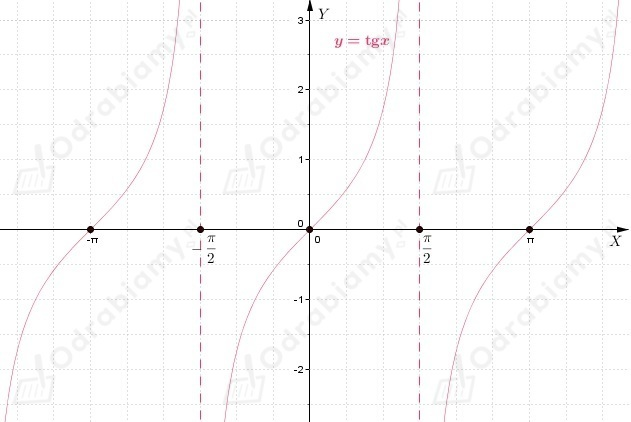
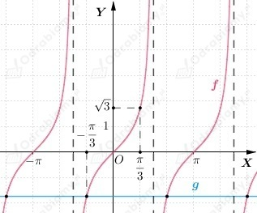
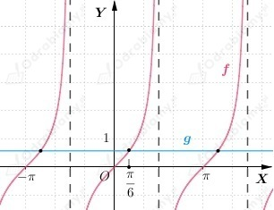

Na podstawie wykresu funkcji możemy odczytać, że środki symetrii, to punkty o współrzędnych
| Przypomnijmy, że dla
|
a)
Wiemy, że
zatem
b)
Wiemy, że
zatem
c)
Wiemy, że
zatem
a)
Zauważmy, że rozwiązaniem podanego wyżej równania są punkty przecięcia wykresu funkcji f(x)=tgx oraz funkcji stałej g(x)=-√3.
Naszkicujmy wykres funkcji

Uwzględniając okresowość funkcji tangens, z wykresu funkcji odczytujemy, że
b)
Zauważmy, że rozwiązaniem podanego wyżej równania są punkty przecięcia wykresu funkcji f(x)=tgx oraz funkcji stałej g(x)=√3/3.
Naszkicujmy wykres funkcji

Uwzględniając okresowość funkcji tangens, z wykresu funkcji odczytujemy, że